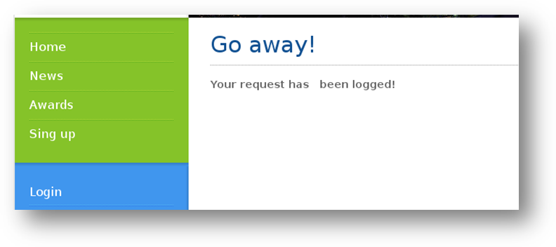
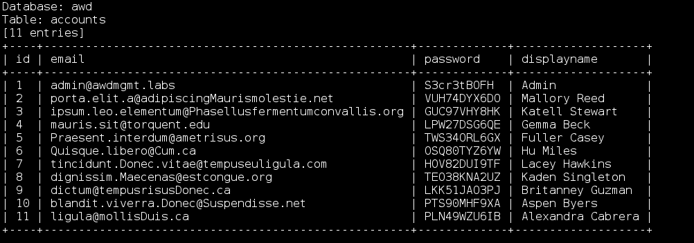

SQL注入的练习
描述
在本实验中，您可以练习课程中学到的 SQL 注入技术和工具。您可以通过以下地址访问目标 Web 应用程序：10.124.211.96。
目标
本实验的目标是测试 Web 应用程序，以找到所有存在注入点的漏洞。一旦找到它们，您应该能够导出所有数据并成功登录到 Web 应用程序。
工具
本实验最好使用以下工具：
- Web 浏览器
- SQLMap
步骤
探索 Web 应用程序
在地址 10.124.211.96 上探索 Web 应用程序，找到所有可能的注入点。
测试和利用注入点
现在，您应该已经找到了一些注入点。使用不同的技术来测试和利用这些注入点。
导出数据
既然您知道目标 Web 应用程序中至少存在一个可利用的 SQL 注入点，那么就利用它来导出所有数据库中的数据。您应该能够检索到一些非常有趣的信息，使您能够成功登录到 Web 应用程序。
不使用任何凭证登录
测试登录表单，尝试使用 SQL 注入并使用正确的有效负载来绕过身份验证机制。
解决方案
仅在完成实验或遇到问题时，请参考解决方案！在实际尝试课程中学到的概念和技术之前，查看解决方案将大大降低实践实验的效益！
解决方案步骤
探索 Web 应用程序
探索 Web 应用程序
在地址 10.124.211.96 上探索 Web 应用程序，找到所有可能的注入点。
测试和利用注入点
到目前为止，您应该已经找到了一些注入点。使用不同的技术对它们进行测试。
导出数据
既然您知道目标 Web 应用程序中至少存在一个可利用的 SQL 注入点，那么就利用它来导出所有数据库中的数据。您应该能够检索到一些非常有趣的信息，使您能够成功登录到 Web 应用程序。
不使用任何凭证登录
测试登录表单，尝试使用 SQL 注入并使用正确的有效负载来绕过身份验证机制。
解决方案
仅在完成实验或遇到问题时，请参考解决方案！在实际尝试课程中学到的概念和技术之前，查看解决方案将大大降低实践实验的效益！
解决方案步骤
探索 Web 应用程序
为了探索 Web 应用程序，我们只需要在浏览器中输入 IP 地址即可：

现在我们能够访问它了，让我们浏览应用程序以找到所有可能的注入点。
目前，我们不知道任何有效的凭证，所以如果我们登录，我们将会收到类似以下的消息：

如果我们继续深入应用程序，我们可以看到以下地址的一个非常有趣的页面：http://10.124.211.96/news.php。
在这里，我们有一个新闻列表，通过点击列表中的任何链接，我们可以看到一个非常有趣的页面：

正如您在浏览器地址栏中所见，应用程序似乎接受一个参数（id）。这可能用于从数据库中检索新闻。
让我们使用这个注入点进行测试！
测试和利用注入点
我们可以对前面步骤中找到的页面运行以下第一个测试：

我们只是在地址栏中添加了一个单引号，如上面的截图所示，我们获得了一个 mysql 错误。现在是时候动手了！让我们创建一些有效负载来测试参数是否容易受到 SQL 注入攻击。
我们想要对它进行布尔条件测试，所以让我们使用以下有效负载：
1 | |

然后，我们尝试以下有效负载（我们将布尔条件从 1=1 改为 1=2）：
1 | |

从前面两个截图中可以看到，我们获得了两个不同的结果。当条件为真时，应用程序返回新闻。当条件为假时，页面不返回任何内容。这意味着该参数容易受到 SQL 注入攻击！
导出数据
既然我们知道了一个易受攻击的注入点，让我们使用 sqlmap 来利用它并从应用程序数据库中检索所有数据：

从前面的截图中可以看到，sqlmap 将该参数标识为 易受攻击！现在我们只需要获取数据库的结构并导出数据。首先，让我们获取表的列表，如下所示：

然后，使用以下命令从 accounts 表中导出所有数据：
1 | |

正如我们所看到的，现在我们有了一系列用户名和密码，可以用来登录到该 Web 应用程序！让我们尝试其中之一：

太棒了，我们成功登录到了 Web 应用程序！
不使用任何凭证登录
到目前为止，我们将测试重点放在 newsdetails.php 页面及其参数上，但是该 Web 应用程序还有另一个注入点需要测试：登录表单！
让我们运行一些测试，看看是否能够绕过登录！为此，我们将使用以下有效负载：
1 | |

正如我们所看到的，登录表单也存在漏洞，实际上出现了 “Welcome!“ 消息！
SQL 注入
在线图书馆 1-3
Poema 读书俱乐部 5-6-7
Arrogant Bank
寻找 SQLi 1-2
描述
在这些 SQL 注入 实验中，学生可以练习发现和利用针对不同数据库管理系统和平台的 SQL 注入攻击技术。
一旦您通过 VPN 连接到实验环境，所有 Web 应用程序将可在以下网址访问：http://info.sqli.site/。
每种类型的实验都有三个主要部分：视频、实验、挑战。
视频 部分包含在视频课程中使用的 Web 应用程序。因此，如果您需要有关情节、攻击等方面的任何信息，请参考相应的视频。
实验 部分包含可以练习特定模块技术并提供解决方案的 Web 应用程序。您稍后可以在本手册中找到它们。
挑战 实验没有解决方案；否则，为什么称之为挑战呢？如果您学习课程并像渗透测试员一样思考，您将实现目标！
工具和信息
最好的工具就是您的大脑。然后，您可能需要以下工具：
Web 浏览器
Burp Suite
Sqlmap
实验 DNS 配置
一旦您的虚拟网络准备就绪，请将以下 IP 地址配置为默认 DNS：10.100.13.37
WINDOWS：更改 TAP 网络设备的属性，将服务器的 IP 地址添加为第一个 DNS 服务器。
LINUX：在 /etc/resolv.conf 文件中添加一条记录，其中包含服务器的 IP 地址。
凭证
请使用以下凭证登录以下 Web 应用程序：
| Web 应用程序 | 用户名 | 密码 |
|---|---|---|
| http://1.challenge.sqli.site | giovanni | mycoolpass |
实验和挑战
实验 #1 - 在线图书馆 - 1
情景
在线图书馆 是一个用于查询图书馆目录的 Web 应用程序。它使用数据库存储有关图书的信息，并且该应用程序易受 SQL 注入攻击。
您知道 DBMS 是 MySQL，并且页面 getBrowserInfo.php 上的参数 Header User-agent 没有被应用程序正确地进行过滤。这意味着它会被 DBMS 处理，并且是可注入的。
这是一个盲 SQL 注入，因此您无法使用 UNION 技术提取数据。
目标
提取数据库结构和任何数据。
您将学到什么
如何使用盲注利用技术
如何手动提取数据
如何使用 sqlmap 自动执行相同的利用
实验 #2 - 在线图书馆 - 2
情景
在线图书馆 是一个用于查询图书馆目录的 Web 应用程序。它使用数据库存储有关已知图书的信息，并且易受 SQL 注入攻击。
您将枚举每个易受 SQL 注入攻击的参数。
目标
找到易受 SQL 注入攻击的参数。
您将学到什么
查找 SQL 注入攻击的方法
如何找到 SQL 注入攻击
如何检测注入类型
如何使用 Burp Suite 查找 SQL 注入攻击
实验 #3 - 在线图书馆 - 3
情景
在线图书馆 是一个用于查询图书馆目录的 Web 应用程序。它使用数据库存储有关图书的信息，并且易受 SQL 注入攻击。
您将检测易受攻击的页面，然后利用它来提取数据库中的任何可用数据。
目标
提取数据库结构和任何数据。
您将学到什么
如何检测基于错误的 SQL 注入攻击
如何手动提取数据（基于错误的技术）
如何使用 sqlmap 自动利用（基于错误的技术）
挑战 #1 - Poema 读书俱乐部 5
情景
Poema 是一个小型读书俱乐部，会员热爱书籍、诗歌和灵性。他们不喝酒，也不参加派对。他们阅读和思考。
他们建立了一个网站，在那里他们可以与世界分享他们的阅读偏好、喜欢的作家和照片。
俱乐部有一个书架副主席和一个俱乐部主席。他们是最智慧和受祝福的成员，过着书籍、内省和禁欲的生活。
目标
您想在该网站中发现 SQL 注入漏洞，确定 SQL 注入的类型和可利用性。您还需要利用漏洞从数据库中提取信息。
- 找出数据库中 Ruud 的密码
您将学到什么
如何手动查找 SQL 注入漏洞
如何确定 SQL 注入是 “盲注” 还是 “基于错误的注入”
如何使用 sqlmap 从数据库中提取信息
挑战 #2 - Poema 读书俱乐部 6
情景
Poema 是一个小型读书俱乐部，会员热爱书籍、诗歌和灵性。他们不喝酒，也不参加派对。他们阅读和思考。
他们建立了一个网站，在那里他们可以与世界分享他们的阅读偏好、喜欢的作家和照片。
俱乐部有一个书架副主席和一个俱乐部主席。他们是最智慧和受祝福的成员，过着书籍、内省和禁欲的生活。
目标
您想要手动利用基于错误的 SQL 注入漏洞从数据库中导出数据。您需要首先确定远程数据库的版本、当前用户和选择的数据库。然后进行模式枚举和数据导出。
- 找出数据库中 Ruud 的密码
您将学到什么
如何手动查找 SQL 注入漏洞
如何确定 SQL 注入是 “盲注” 还是 “基于错误的注入”
如何使用基于错误的技术和仅使用 Web 浏览器从数据库中提取信息
挑战 #3 - Arrogant Bank
情景
Arrogant Bank 是一家拥有现代化网页界面的银行，您可以在其中执行一些操作，比如…嗯…了解您账户中有多少钱。您是 Giovanni，一个好人，对生活感到沮丧，并且在该银行有一个账户：
用户名：giovanni
密码：mycoolpass
这家银行特别傲慢，嘲笑穷账户持有人。您碰巧是最穷的账户持有人（因此感到沮丧）。
目标
您想要在该网站中发现 SQL 注入漏洞，确定 SQL 注入的类型和可利用性。您还需要利用漏洞从数据库中提取信息。
找出最富有的账户的密码
成为最富有的账户，以获得尊重
您将学到什么
使用 burp 代理检查应用程序逻辑
发现 SQL 注入漏洞
使用 sqlmap 利用 SQL 注入漏洞
挑战 #4 - Poema 读书俱乐部 7
情景
Poema 是一个小型读书俱乐部，会员热爱书籍、诗歌和灵性。他们不喝酒，也不参加派对。他们阅读和思考。
他们建立了一个网站，在那里他们可以与世界分享他们的阅读偏好、喜欢的作家和照片。
俱乐部有一个书架副主席和一个俱乐部主席。他们是最智慧和受祝福的成员，过着书籍、内省和禁欲的生活。
该网站最近经历了进一步的开发和错误修复，尽管数据库结构没有发生变化。
目标
您想要在该网站中发现 SQL 注入漏洞，确定 SQL 注入的类型和可利用性。
您还需要利用漏洞从数据库中提取信息。这次您要确定是否可以使用工具，以及是否可以使用其他手动和更直接的技术。
- 找出数据库中 Ruud 的密码
您将学到什么
如何手动查找 SQL 注入漏洞
如何确定在特定情况下使用哪种 SQL 注入技术最佳
如何使用直接查询从数据库中提取信息
解决方案
请继续阅读下一篇